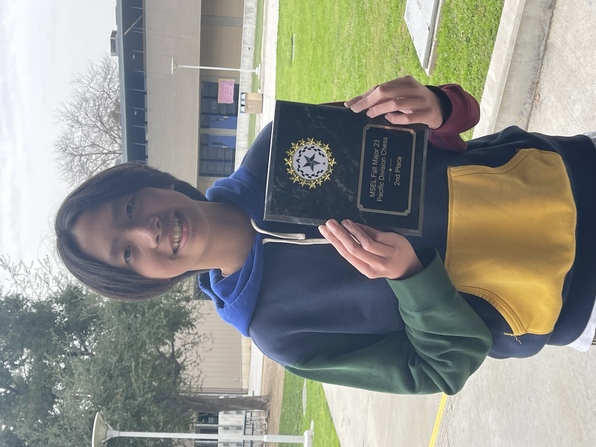

Haoxuan in 8th grade
Founding of TCI
I founded TCI around February of 2025, near the end of my
Freshman year in high school. After the fall of the main
chess organization in our area, Chess4All, I decided to try
and take on the torch. From there, me, alongside my team,
built this organization from the ground up.
Our Mission
Our primary mission is to spread the love of chess around
our community. Growing up, I loved playing chess and
everything associated with it. I want my community to love
the game as much as I do. We attempt to achieve this
through frequent posts and in-person tournaments.
Personal Ventures
TCI has been a tremendous aid to my skill set. It has
inspired me to take on an active leadership role,
coordinating with other founders to accomplish our mission.
My technical skills in time management, graphic design,
and video editing have also been polished due to constant
use and tinkering.